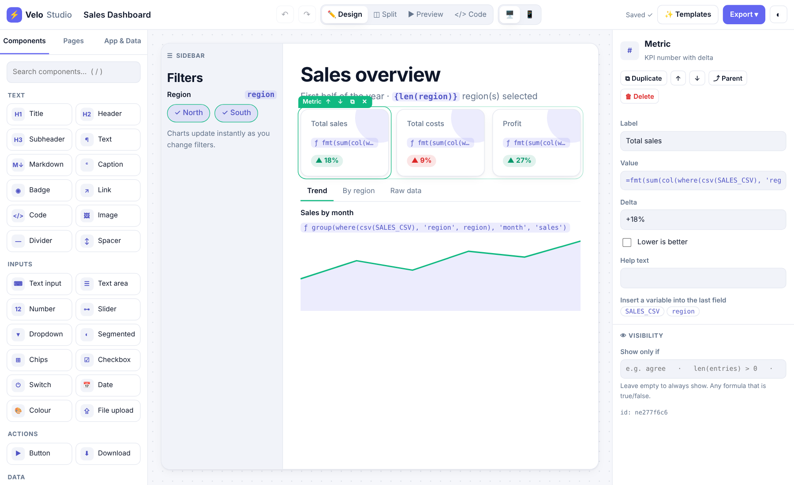
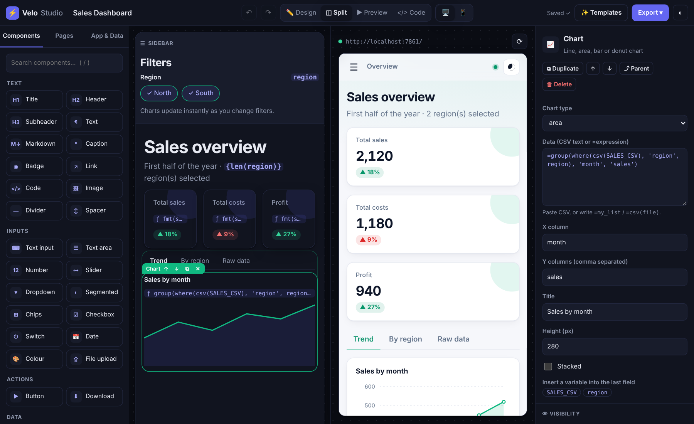

No section matches your search.
Python web apps by drag & drop, or in code.
Velo builds polished web apps (dashboards, forms, data tools, chat UIs) with zero dependencies. Design visually in Velo Studio, or write a few lines of Python. Both produce the same app, and Studio apps export to clean Python whenever you want.
pip install velo-ui
velo studio # drag & drop builder → http://localhost:7860
38 components, nested layouts, a live preview next to the canvas, undo/redo and autosave.
{name} in text, =price * qty for values, button actions with no code.
Export any Studio app to readable Velo code, or plug your own functions into buttons.
Pure standard library. Installs in seconds and runs anywhere Python 3.9+ runs.
Only the page function re-runs; the browser morphs the DOM, so focus and scroll are kept.
velo run --prod or velo docker. Works on Render, Railway, Fly.io, a VPS…
Installation
You need Python 3.9 or newer. Check with python --version (on some systems: python3 --version). Get Python from python.org. On Windows, tick “Add python.exe to PATH” in the installer.
Recommended: inside a virtual environment
# 1. create a project folder and a virtual environment
mkdir myapp
cd myapp
python -m venv .venv
# 2. activate it
.venv\Scripts\activate # Windows
source .venv/bin/activate # macOS / Linux
# 3. install Velo
pip install velo-ui
# 4. check
velo versionvelo version prints the version and the author line. If it does, you're ready.
Upgrade
pip install -U velo-uivelo-ui, but in Python you write import velo, and the command is velo.Optional extras
Velo needs nothing else. If pandas is installed, ui.table and the charts accept DataFrames directly; Pillow images work with ui.image. Neither is required.
Quick start: Studio (no code)
Build a working app in five minutes without writing code.
- Open Studio. In a terminal, inside your project folder:
Your browser opensvelo studiohttp://localhost:7860. Studio createsapp.velo.jsonin the folder. That file is your app. - Pick a template from the welcome window (try Hello world), or start blank.
- Drag a component from the left panel onto the canvas, e.g. a Text input. Its Variable name is
name. - Drag a Title above it, click it, and in the inspector on the right type
Hello {name}!. - Click ◫ Split in the top bar. The real app runs on the right. Type in the input and the title changes live.
- Add a Button. In its inspector, under When clicked, choose Show message with text
Nice to meet you, {name} 🎉. - Run it like a normal app when you're done (Studio autosaves):
velo run app.velo.json
velo export app.velo.json to get an app.py.Quick start: Python
Create app.py:
import velo
app = velo.App("Hello Velo", icon="👋")
@app.page("/")
def home(ui):
ui.title("Hello Velo 👋", "Type your name below")
name = ui.input("Your name", placeholder="Ada Lovelace")
level = ui.slider("Excitement", 1, 10, 7)
ui.text(f"Hi {name or 'there'}! " + "🎉" * level)
if ui.button("Celebrate", icon="✨"):
ui.toast(f"Thanks {name}!", "success")
if __name__ == "__main__":
app.run()Run it:
python app.py # or: velo run app.py --openOpen http://localhost:8000. Save the file and the browser updates instantly (hot reload) without losing what you typed.
Scaffold a starter project with velo new myapp.
The Studio screen

| Area | What it does |
|---|---|
| Top bar | App title · undo/redo · views Design, Split, Preview, Code · desktop/mobile frame · problems badge · save status · ✨ Templates · Export menu · dark mode. |
| Left: Components | The palette, grouped (Text, Inputs, Actions, Data, Feedback, Layout). Search with /. Drag onto the canvas or click to add. |
| Left: Pages | Add, rename, reorder, duplicate and delete pages; set each page's URL path and icon. |
| Left: App & Data | Title, icon, accent colour, theme, wide layout, state variables, the Python hooks file, and a formula cheat sheet. |
| Centre: canvas | Your page as it will look: a Sidebar zone on the left and the page body. Blue lines show where a drop will land. |
| Right: inspector | Properties of the selected component, its actions (buttons), Show only if, and any problems. |
Command options: velo studio [file.velo.json] [-t template] [--port 7860] [--host 127.0.0.1] [--no-open] [--force]. The live preview runs on port + 1 (7861 by default).
Building a page
Adding components
- Drag a tile from the palette and drop it anywhere: between items, inside a card, a column, a tab, or the sidebar.
- Click a tile to add it right after the selected component (or inside it, if the selection is a container). This also works on touch screens.
Selecting and editing
- Click a component to select it. A blue chip appears with ↑ ↓ (move), ⧉ (duplicate) and ✕ (delete).
- Double-click to jump straight into its first property.
- The inspector shows all properties. Changes appear instantly on the canvas and in the preview.
- Drag a component that's already on the canvas to move it, even into another container.
Layout components (containers)
| Container | Use it for | Tip |
|---|---|---|
| Columns | Side-by-side content | Widths 1,1 = two equal columns, 2,1 = wide + narrow, 1,1,1 = three. |
| Card | A panel with a title | Great for forms and KPI groups. |
| Row | Items in a line (buttons, badges) | Wraps on small screens. |
| Tabs | Switchable sections | One tab label per line. Click tab labels on the canvas to edit each tab. |
| Expander | Collapsible “more details” | Set Open by default if needed. |
| Group | Invisible wrapper | Combine with Show if to hide/show many things at once. |
Every page also has a Sidebar: drop filters and settings there.
Variables & state
Velo Studio apps work like a spreadsheet: things have names, and anything can refer to them.
Input variables
Every input (text, number, slider, dropdown, checkbox, upload, chat…) has a Variable name, e.g. name, age, city, file. Its value is whatever the visitor entered. Rules: start with a letter; letters, digits and _ only; each name used once.
State variables
Values the app remembers for each visitor: a counter, a list of form entries, a “logged in” flag. Add them in App & Data → State variables with a starting value:
| Starting value | Type | Example use |
|---|---|---|
0 | number | click counter, score |
"" | text | a status message |
[] | list | form entries, a to-do list (use with Add to list) |
false | yes/no | show/hide something with Flip yes/no |
{"a": 1} | dictionary | settings |
Renaming
Rename a variable in the inspector, and every {reference}, formula and action that uses it is updated automatically.
Formulas
Formulas are the only “code” you ever write in Studio. They use Python syntax and run in a safe sandbox.
| You write | Where | Result |
|---|---|---|
Hello {name}! | any text property | A template: {…} is replaced by the value. |
Total: {price * qty:,.2f} | text | Compute + format → Total: 1,234.50 |
=count + 1 | any property | Starts with =: the whole value is computed. |
agree and '@' in email | Show if / Only if | True or false. |
{{ and }} | text | Literal { and }. |
What you can use
- Arithmetic
+ - * / // % **, comparisons== != < <= > >=,and or not,in - Conditions:
'Pass' if score >= 50 else 'Fail' - Lists, dicts, indexing and slicing:
rows[0]['name'],text[:20] - List comprehensions:
[r for r in rows if r['score'] > 90] - Text methods:
name.upper(),.lower() .title() .strip() .split() .replace() .startswith()… - Dict methods:
.get() .keys() .values() .items(); dates:.year .month .day .strftime()
Functions
| Function | Example | What it does |
|---|---|---|
len sum min max round abs | =round(sum(xs) / len(xs), 1) | The usual maths |
sorted range list dict set any all zip enumerate reversed | =sorted(names) | Collections |
str int float bool | =int(age) + 1 | Convert types |
csv(text_or_file) | =csv(file) | Rows (list of dicts) from CSV text or an uploaded file; numbers converted |
col(rows, name) | =sum(col(rows, 'sales')) | All values of one column |
where(rows, column, value) | =where(rows, 'city', city) | Filter rows. value may be a list; empty = all rows |
group(rows, by, value, agg) | =group(rows, 'month', 'sales') | Group & aggregate. agg: 'sum' (default), 'mean', 'count', 'min', 'max' |
columns(rows) | =columns(csv(file)) | Column names (perfect for dropdown options) |
mean(xs) | =mean(col(rows, 'score')) | Average |
fmt(value, spec) | =fmt(total, ',.2f') | Format a number as text |
to_csv(rows) | =to_csv(entries) | Rows back to CSV text |
today() now() | Today is {today()} | Current date / date-time |
sqrt pi | =round(pi * r ** 2, 2) | Maths constants/functions |
_. They're written by the app author; visitors only ever enter data, never code.Button actions
Select a Button → ⚡ When clicked → + Add action. Actions run top to bottom. Each one can have an Only if condition.
| Action | Fields | Example |
|---|---|---|
| Set variable | variable, value | count ← =count + 1 |
| Flip yes/no | variable | show_help |
| Add to list | variable, value | entries ← ={'name': name, 'email': email} |
| Clear variable | variable | entries becomes [], numbers 0, text "" |
| Reset inputs | names (blank = all) | name email |
| Show message | text, style | Saved, {name}! · info / success / warning / error |
| Go to page | page | /thanks |
| Run Python hook | function name | send_email (see Python hooks) |
Values: =… is computed; 5 becomes a number; true/false become yes/no; anything else is text (with {templates}).
Example: a validated sign-up button
| # | Action | Only if |
|---|---|---|
| 1 | Show message “Please enter a valid email” (warning) | '@' not in email |
| 2 | Add to list entries ← ={'name': name, 'email': email} | '@' in email |
| 3 | Show message “Welcome, {name}!” (success) | '@' in email |
| 4 | Reset inputs name email | '@' in email |
Show if (visibility)
Any component has 👁 Visibility → Show only if. Write a condition; the component appears only when it's true. Leave empty to always show.
| Condition | Meaning |
|---|---|
agree | the “agree” checkbox is ticked |
len(entries) > 0 | the list has at least one item |
plan == 'Pro' | a dropdown/segmented choice |
file | a file has been uploaded |
age >= 18 and country == 'Pakistan' | combine with and / or |
Pages & navigation
- Pages tab → + Add page. Set its Title, Path (e.g.
/about) and Icon. - With two or more pages, the app gets a navigation menu automatically (sidebar on desktop, ☰ menu on mobile).
- Buttons can jump between pages with the Go to page action.
- Input values are kept per visitor across pages, so a value typed on page 1 can be shown on page 2 with
{name}.
Data, CSV & charts
Table and Chart have a Data property that accepts either:
- CSV text pasted directly (first line = column names), or
- a formula starting with
=, such as=entries(a state list),=csv(file)(an upload),=group(csv(file), 'region', 'sales').
Upload a CSV and chart it
- Drop a File upload (variable
file, accept.csv) into the sidebar. - Drop a Dropdown named
x_colwith options=columns(csv(file)), and another namedy_colwith the same options. - Drop a Chart: Data
=csv(file), X column{x_col}, Y columns{y_col}. - Drop a Table: Data
=csv(file). Give the chart and table Show iffile.
The Data explorer template is exactly this, with a sample dataset.
Charts
Types: line, area, bar, pie (donut). X column is the label column; Y columns can be several, comma-separated (sales, costs). Leave them empty and Velo picks sensible columns. Stacked stacks bars/areas.
Download
The Download component's content can be text with templates, or a formula. A list of rows (e.g. =entries) is turned into CSV automatically.
Chat component
Drop a Chat component. It shows a greeting, the conversation, and an input box. Its reply comes from either:
- Reply template: text where
{message}is what the visitor typed, e.g.You said **{message}** ({len(message.split())} words). Markdown works. - Python hook: the name of a function in your hooks file that returns the reply. Connect any AI model this way.
The conversation is stored in the chat's variable (default chat) as a list of {'role': ..., 'content': ...}; =len(chat) counts messages. Reset inputs with the chat's name clears it.
Python hooks
Hooks let a Studio app call your own Python, with any library you like (send email, query a database, call an AI model…).
- In App & Data → Python hooks, set Hooks file to
hooks.py. - Create
hooks.pynext to yourapp.velo.json. - Use a function from a button (Run Python hook) or a chat component (hook property).
# hooks.py
def send_email(ctx): # button action
to = ctx["email"] # read any variable (input or state)
# ... smtplib / an email API here ...
ctx.set("sent", True) # change a state variable or an input
ctx.toast(f"Email sent to {to} ✉️", "success")
def answer(ctx, message): # chat hook: return the reply (markdown allowed)
if "price" in message.lower():
return "It's **free**!"
return f"You said: {message}"| Context member | What it gives you |
|---|---|
ctx["name"] / ctx.get("name", default) | Read an input or state variable |
ctx.values | Dict of all input values |
ctx.state | This visitor's state (dict-like) |
ctx.set(name, value) | Set a state variable or an input |
ctx.toast(text, kind) | Show a message (info, success, warning, error) |
ctx.navigate(path) | Go to another page |
ctx.ui | The full Velo ui object for anything else |
Studio reloads the preview automatically when hooks.py changes. You can also register functions in Python with @app.action("name"); see Loading Studio apps.
Templates
Open ✨ Templates in Studio, or start from one on the command line: velo studio app.velo.json -t dashboard.
| Template | Name for -t | Shows you |
|---|---|---|
| ⬜ Blank | blank | An empty page |
| 👋 Hello world | hello | Inputs, live text, a counter button, reset |
| 📊 Dashboard | dashboard | Sidebar filters, KPI metrics, tabs with charts, table + CSV download, two pages |
| 📝 Form + table | form | Validation with “Only if”, adding to a list, reset, export CSV, show-if card |
| 🔎 Data explorer | explorer | Upload a CSV, choose columns and chart type |
| 💬 Chatbot | chatbot | Chat UI with a reply template, ready for an AI hook |
| 🧮 Calculator | calculator | Loan maths with live formulas and a generated chart |
Preview, code & export
- ◫ Split: canvas + live app side by side. ▶ Preview: the live app alone. Edits hot-swap into the preview without losing what you typed there.
- 🖥️ / 📱: desktop or phone-sized frame.
- </> Code: the exact Python your app equals. Copy or download it.
- Export menu: download
app.py, download the.velo.json, import a.velo.json, or open the preview in a new tab.
velo export app.velo.json # writes app.py next to it
velo export app.velo.json -o web.py # choose the file name
python app.py # the exported app runs on its ownExported code is ordinary Velo Python: widgets become variables, actions become small functions, templates become f-strings. It's the natural path from no-code to full code.
Saving
Studio autosaves every change to the .velo.json file (status in the top bar). Ctrl+S saves immediately. The file is plain JSON, so commit it to git like any source file.
Problems
Studio checks your app as you work: unknown variables, formula typos, duplicate names. A red/yellow badge marks the component; the top-bar ⛔ problems button lists them all and jumps to each.
Keyboard shortcuts
| Keys | Action |
|---|---|
| Del / Backspace | Delete selected component |
| Ctrl/⌘ + D | Duplicate |
| Ctrl/⌘ + Z | Undo |
| Ctrl/⌘ + Shift + Z or Ctrl + Y | Redo |
| Alt + ↑ / ↓ | Move up / down |
| Ctrl/⌘ + S | Save now |
| / | Search components |
| 1 2 3 4 | Design · Split · Preview · Code |
| Esc | Deselect / close dialog |
| Double-click | Edit the component's first property |
Component reference (Studio)
Every component, its type in .velo.json, and its properties. Inputs marked 🔤 are variables.
| Type | Name | What it is | Properties |
|---|---|---|---|
| Text | |||
title | Title | Big page title + subtitle | text, subtitle |
header | Header | Section heading | text |
subheader | Subheader | Smaller heading | text |
text | Text | Paragraph | text, muted |
markdown | Markdown | Rich text: bold, lists, links, tables | text |
caption | Caption | Small muted text | text |
badge | Badge | Coloured label | text, kind (accent/success/warning/error/neutral) |
link | Link | External link | text, url |
code | Code | Code block with copy button | code, lang |
image | Image | Image from a URL | src, caption, width |
divider | Divider | Horizontal line | — |
space | Spacer | Vertical space | height |
| Feedback | |||
alert | Alert | Info / success / warning / error box | kind, title, text |
metric | Metric | KPI number with delta arrow | label, value, delta, inverse, help |
progress | Progress | Progress bar (0–100) | value, label |
| Inputs 🔤 | |||
input | Text input | Single-line text | name, label, placeholder, value, itype (text/password/email/url/tel), help |
textarea | Text area | Multi-line text | name, label, placeholder, value, rows, help |
number | Number | Number box | name, label, value, min, max, step, help |
slider | Slider | Drag to pick a number | name, label, min, max, value, step, suffix, help |
select | Dropdown | Pick one | name, label, options, value, help |
radio | Segmented | Pick one of a few (buttons) | name, label, options, value |
multiselect | Chips | Pick many | name, label, options, value |
checkbox | Checkbox | Yes / no | name, label, value |
toggle | Switch | On / off | name, label, value |
date | Date | Date picker | name, label |
color | Colour | Colour picker | name, label, value |
upload | File upload | Drag & drop file | name, label, accept |
| Actions | |||
button | Button | Runs actions | label, kind (primary/secondary/ghost/danger), icon, full, actions |
download | Download | Download text/CSV | label, content, filename |
| Data | |||
table | Table | Searchable, sortable, paginated | data, page_size, search |
chart | Chart | Line, area, bar, pie | kind, data, x, y, title, height, stacked |
chat | Chat 🔤 | Conversation UI | name, placeholder, greeting, reply, hook |
| Layout (hold other components) | |||
columns | Columns | Side by side | widths, gap (sm/md/lg) |
card | Card | Panel | title, subtitle |
row | Row | Horizontal line | — |
tabs | Tabs | Tabbed sections | labels |
expander | Expander | Collapsible | label, open |
container | Group | Invisible wrapper | — |
Every component also accepts show_if.
Python: App & pages
import velo
app = velo.App(
"My App", # title (browser tab + sidebar)
icon="🚀", # emoji favicon/logo
theme="auto", # "auto" | "light" | "dark"
accent="#10b981", # one colour themes everything
wide=False, # full-width layout
)
@app.page("/", title="Dashboard", icon="📊")
def dashboard(ui):
ui.title("Dashboard")
@app.page("/settings", title="Settings", icon="⚙️")
def settings(ui):
ui.title("Settings")
app.run() # dev: hot reload · app.run(prod=True) for deploymentapp.run(host=None, port=None, *, reload=None, prod=None, open=False). Defaults: port 8000 (or $PORT), host 127.0.0.1 in dev, 0.0.0.0 in prod. Two or more pages get automatic navigation.
Python: text & feedback
ui.title("Title", "optional subtitle")
ui.header("Section"); ui.subheader("Subsection")
ui.text("Paragraph", muted=False); ui.caption("small note")
ui.markdown("**bold**, _italic_, `code`, [link](https://...)") # safe markdown (alias ui.md)
ui.code("print('hi')", lang="python")
ui.json({"a": 1})
ui.badge("New", "success"); ui.link("Docs", "https://...")
ui.image("photo.png", caption="...", width=400) # URL, path, bytes or PIL image
ui.divider(); ui.space(24)
ui.info("..."); ui.success("..."); ui.warning("..."); ui.error("...", title="Oops")
ui.alert("text", kind="info", title=None)
ui.metric("Revenue", "$12.4k", delta="+8%", help="...", inverse=False)
ui.progress(0.65, "Uploading") # 0.0 – 1.0
ui.toast("Saved!", "success") # corner notification
ui.html("<b>trusted HTML</b>")Python: inputs
Every input returns its current value. Give it key="..." to read/write it from anywhere with ui.get / ui.set.
name = ui.input("Name", placeholder="Ada", type="text", help=None) # type: text|password|email|url|tel
bio = ui.textarea("Bio", rows=4)
age = ui.number("Age", 30, min=0, max=120, step=1)
level = ui.slider("Level", 0, 100, 50, step=5, suffix="%")
city = ui.select("City", ["Karachi", "Lahore", "Islamabad"]) # returns the option itself (any type)
plan = ui.radio("Plan", ["Free", "Pro", "Team"]) # segmented control (alias ui.segmented)
tags = ui.multiselect("Tags", ["Python", "Data", "AI"]) # list
ok = ui.checkbox("I agree"); dark = ui.toggle("Dark mode")
day = ui.date("Start date") # datetime.date or None
color = ui.color("Brand colour", "#6366f1")
f = ui.upload("CSV file", accept=".csv", multiple=False) # UploadedFile | list | None
if f:
ui.text(f"{f.name} · {f.size} bytes")
rows = f.text() # decoded text · f.data is bytesOptions can be any objects. Use format=lambda o: o.name to control how they're shown. All inputs accept on_change=fn, args=(...).
Python: layout
a, b, c = ui.columns(3) # or ui.columns([2, 1]), gap="sm"|"md"|"lg"
a.metric("Users", 1520) # containers proxy every component…
with b: # …or use `with`
ui.metric("Revenue", "$12k")
with ui.card("Settings", "optional subtitle"):
ui.toggle("Enabled")
t1, t2 = ui.tabs(["Chart", "Data"])
with t1: ui.line_chart(rows)
with t2: ui.table(rows)
with ui.expander("Advanced", open=False):
ui.number("Retries", 3)
with ui.sidebar: # the left sidebar
region = ui.select("Region", ["North", "South"])
with ui.row(): # horizontal group (buttons, badges)
ui.button("Yes"); ui.button("No", kind="secondary")
with ui.container(): ... # plain groupingPython: tables & charts
Data can be a pandas DataFrame, a list of dicts, a dict of lists, or a list of lists.
rows = [{"month": "Jan", "sales": 120, "costs": 80},
{"month": "Feb", "sales": 150, "costs": 90}]
ui.table(rows, page_size=10, search=True) # sortable, searchable (alias ui.dataframe)
ui.line_chart(rows, x="month", y=["sales", "costs"])
ui.area_chart(rows, x="month", y="sales", title="Sales")
ui.bar_chart(rows, x="month", y=["sales", "costs"], stacked=True)
ui.pie_chart({"k": ["A", "B"], "v": [60, 40]})
ui.chart(rows, x="month", y="sales", kind="bar", height=300) # genericData helpers used by Studio are available in Python too:
from velo.helpers import csv, col, where, group, columns, mean, to_csv, fmt
data = csv(open("sales.csv").read()) # or csv(uploaded_file)
north = where(data, "region", "North")
ui.bar_chart(group(north, "month", "sales"), x="month", y="sales")Python: state, keys & callbacks
@app.page("/")
def counter(ui):
ui.init(count=0, todos=[]) # defaults, set once per visitor
def add(step):
ui.state.count += step # callbacks run BEFORE the re-render
with ui.row():
ui.button("−", on_click=add, args=(-1,), kind="secondary")
ui.button("+", on_click=add, args=(1,))
ui.metric("Count", ui.state.count)| Call | Purpose |
|---|---|
ui.init(**defaults) | Set state defaults once per session |
ui.state.x / ui.state["x"] | Per-visitor memory (dict-like). Use ["items"] form for names like items, keys |
ui.get(key, default) / ui.set(key, value) | Read/write any widget that has key= |
ui.reset(*keys) | Reset widgets to defaults (no keys = all) |
ui.navigate("/page") | Go to another page (also inside callbacks) |
ui.rerun() | Run the page again immediately |
ui.session_id | This visitor's session id |
Python: chat apps
@app.page("/")
def chat(ui):
ui.init(msgs=[])
for role, text in ui.state.msgs:
ui.chat_message(role, text) # role: "user" | "assistant"
if q := ui.chat_input("Ask me anything…"):
reply = my_llm(q) # any AI model / logic
ui.state.msgs += [("user", q), ("assistant", reply)]
ui.rerun()Python: caching & live updates
@velo.cache(ttl=300, maxsize=256) # shared across visitors and re-runs
def load_data(path):
return expensive_read(path)
ui.autorefresh(5) # live dashboard: re-run every 5 s while open
app.push() # from a background thread: refresh all browsers
app.push(ui.session_id) # …or just one visitorPython: loading Studio apps
Run a .velo.json from Python and extend it with code.
import velo
app = velo.load("app.velo.json") # a normal velo.App
@app.action("send_email") # usable by "Run Python hook" buttons & chat hooks
def send_email(ctx):
ctx.toast(f"Sent to {ctx['email']}", "success")
@app.page("/admin", title="Admin", icon="🔐") # hand-written pages next to Studio pages
def admin(ui):
ui.title("Admin")
app.run()| Function | Returns |
|---|---|
velo.load(path_or_dict) | A runnable app built from a spec |
velo.spec.validate(spec) | List of problems {id, level, msg} |
velo.codegen.to_python(spec) | Equivalent Python source code |
velo.Context | The object hooks receive (ctx) |
Recipes
1 · Student result calculator (Studio)
- Three Number inputs:
maths,science,english(max 100). - A Metric “Total” with value
=maths + science + english. - A Metric “Percentage” with value
{(maths + science + english) / 3:.1f}%. - A Badge with text
{'Pass' if (maths + science + english) / 3 >= 50 else 'Fail'}. - An Alert (success) “Excellent work!” with Show if
(maths + science + english) / 3 >= 80.
2 · Collect entries and export CSV (Studio)
State entries = [] · inputs name, email · button with Add to list entries ← ={'name': name, 'email': email} then Reset inputs · a Table with data =entries · a Download with content =entries, filename entries.csv. Or just start from the Form + table template.
3 · CSV dashboard (Python)
import velo
from velo.helpers import csv, where, group, col
app = velo.App("Sales", icon="📊", wide=True)
@app.page("/")
def home(ui):
with ui.sidebar:
f = ui.upload("Sales CSV", accept=".csv")
if not f:
ui.info("Upload a CSV with month, region and sales columns.")
return
rows = csv(f)
with ui.sidebar:
region = ui.multiselect("Region", sorted({r["region"] for r in rows}))
rows = where(rows, "region", region)
a, b = ui.columns(2)
a.metric("Total sales", f"{sum(col(rows, 'sales')):,}")
b.metric("Rows", len(rows))
ui.bar_chart(group(rows, "month", "sales"), x="month", y="sales")
ui.table(rows)
app.run()4 · AI chatbot (Studio + hook)
Use the Chatbot template, set Hooks file to hooks.py and the chat's hook to answer:
# hooks.py — works with any AI provider's Python library
def answer(ctx, message):
history = ctx["chat"] # [{'role': 'user', 'content': ...}, ...]
return call_your_model(history) # return the reply text5 · Multi-page app with navigation buttons (Python)
@app.page("/", title="Form", icon="📝")
def form(ui):
ui.input("Name", key="name")
ui.button("Continue →", on_click=lambda: ui.navigate("/summary"))
@app.page("/summary", title="Summary", icon="✅")
def summary(ui):
ui.title(f"Thanks, {ui.get('name') or 'friend'}!")CLI reference
| Command | What it does |
|---|---|
velo studio [file] [-t TEMPLATE] [--force] [--port N] [--host H] [--no-open] | Open the drag & drop builder (default file app.velo.json, created if missing) |
velo run app.py · velo run app.velo.json | Run an app with hot reload |
--port N --host H --open --prod --no-reload | Run options. --prod: 0.0.0.0, no reload, no tracebacks, gzip |
velo export [file.velo.json] [-o app.py] [--force] | Turn a Studio app into Python |
velo new NAME | Scaffold a starter project |
velo docker [app.py|app.velo.json] [--port N] | Write a Dockerfile (and vendor Velo) |
velo version | Print version and author |
python -m velo ... | Same commands, if velo isn't on PATH |
Environment variables: PORT, VELO_HOST, VELO_ACCESS_LOG=1 (log requests).
Deploy
Any server or VPS
pip install velo-ui
velo run app.py --prod --port 8000 # or: velo run app.velo.json --prodDocker
velo docker app.py # writes Dockerfile + .dockerignore
docker build -t myapp .
docker run -p 8000:8000 myappRender, Railway, Fly.io, Koyeb, Cloud Run, Heroku
- Put your app in a GitHub repo with a
requirements.txtcontainingvelo-ui(plus anything your hooks use). - Start command:
velo run app.py --prod(orapp.velo.json). Velo reads$PORTautomatically. - Health check path:
/health.
/api/stream.Publishing these docs
This page is a single docs/index.html. On GitHub: Settings → Pages → Deploy from a branch → main / /docs, and it goes live at https://rafay183.github.io/velo/. It also works on Netlify, Vercel, or any static host.
The .velo.json format
{
"velo": 1,
"generator": "Velo Studio — by Muhammad Rafay Shaikh (Pakistan)",
"app": {"title": "Registration", "icon": "📝", "accent": "#8b5cf6", "theme": "auto", "wide": false},
"state": {"entries": []},
"hooks": "hooks.py",
"pages": [{
"path": "/", "title": "Register", "icon": "📝",
"sidebar": [],
"body": [
{"id": "n1", "type": "input", "props": {"name": "email", "label": "Email"}},
{"id": "n2", "type": "button", "props": {"label": "Join", "actions": [
{"do": "append", "var": "entries", "value": "={'email': email}", "if": "'@' in email"}]}},
{"id": "n3", "type": "card", "props": {"title": "People"}, "show_if": "len(entries) > 0",
"slots": [[{"id": "n4", "type": "table", "props": {"data": "=entries"}}]]}
]
}]
}- Nodes have
id,type,props, optionalshow_if, and for containersslots(a list of lists: one per column/tab). - Actions use
do:set toggle append clear reset toast navigate call, plus fieldsvar value text kind to fn vars if. - Missing properties take their defaults, so hand-written specs can stay short.
How Velo works
- The browser opens one live stream (Server-Sent Events) and sends small JSON events (
set,click,submit). - The server applies the event to that visitor's session, runs callbacks, then re-runs only the page function, producing a compact component tree.
- The browser morphs the page to match. Unchanged elements aren't touched, so focus, cursor, scroll, open tabs and table sorting survive.
- When you save a file, Velo re-executes it, swaps the new page functions into the running app and refreshes browsers. Sessions stay where they were.
- Studio apps are interpreted from the JSON at runtime by the same engine, so a Studio app and its exported Python behave the same.
Customise the look with App(accent=..., theme=..., wide=...) or override CSS variables (--accent, --r, --font…) via ui.html("<style>...</style>").
Cheat sheets
Print this section (Ctrl+P) for a handy reference.
🖥️ Terminal
pip install velo-ui # install
pip install -U velo-ui # upgrade
velo studio # builder
velo studio x.velo.json -t form
velo run app.velo.json # run Studio app
velo run app.py --open # run Python app
velo export app.velo.json # → app.py
velo new myapp # scaffold
velo run app.py --prod # production
velo docker app.py # Dockerfile
velo version🧮 Studio formulas
- Hello {name}
- show a variable in text
- {price * qty:,.2f}
- compute + format
- =count + 1
- whole value computed
- ='Yes' if agree else 'No'
- condition
- =csv(file)
- rows from upload
- =where(rows, 'city', city)
- filter
- =group(rows, 'month', 'sales')
- group & sum
- =sum(col(rows, 'sales'))
- column total
- =columns(rows)
- column names
- =[r for r in rows if r['x'] > 5]
- comprehension
- len(entries) > 0
- Show if / Only if
⚡ Button actions
- Set variable
- count ← =count + 1
- Flip yes/no
- show_help
- Add to list
- entries ← ={'name': name}
- Clear variable
- entries → []
- Reset inputs
- name email (blank = all)
- Show message
- Saved {name}! · success
- Go to page
- /thanks
- Run Python hook
- def fn(ctx): … in hooks.py
- Only if
- any condition per action
🐍 Python basics
import velo
app = velo.App("App", icon="⚡")
@app.page("/", title="Home")
def home(ui):
ui.title("Hi")
x = ui.input("Name")
if ui.button("Go"):
ui.toast(f"Hi {x}")
app.run()🧩 Python inputs
ui.input ui.textarea ui.number
ui.slider(l, min, max, value)
ui.select(l, opts) ui.radio(l, opts)
ui.multiselect(l, opts)
ui.checkbox ui.toggle ui.date
ui.color ui.upload(l, accept=".csv")
ui.button(l, on_click=fn, args=())
ui.download(l, data, "file.csv")📐 Python layout & data
a, b = ui.columns(2) # [2, 1]
with ui.card("T"): ...
t1, t2 = ui.tabs(["A", "B"])
with ui.expander("More"): ...
with ui.sidebar: ...
with ui.row(): ...
ui.table(rows) ui.metric(l, v, d)
ui.line_chart(rows, x=, y=)
ui.bar_chart ui.area_chart
ui.pie_chart ui.chart(kind=)🧠 Python state
ui.init(count=0, items=[])
ui.state.count += 1
ui.state["items"] # dict-name keys
ui.get("key"); ui.set("key", v)
ui.reset("key") # or ui.reset()
ui.navigate("/p"); ui.rerun()
@velo.cache(ttl=60)
ui.autorefresh(5); app.push()💬 Text & feedback
ui.title(t, sub) ui.header ui.subheader
ui.text ui.caption ui.markdown
ui.code(src, lang) ui.json(obj)
ui.badge(t, kind) ui.link(t, url)
ui.image(src) ui.divider() ui.space()
ui.info ui.success ui.warning ui.error
ui.progress(0.5) ui.toast(t, kind)
ui.chat_message(role, t)
ui.chat_input("Ask…")⌨️ Studio keys
- Del
- delete
- Ctrl D
- duplicate
- Ctrl Z / Ctrl Shift Z
- undo / redo
- Alt ↑ ↓
- move
- Ctrl S
- save
- /
- search components
- 1 2 3 4
- Design · Split · Preview · Code
- Esc
- deselect
Troubleshooting & FAQ
“velo” is not recognized / command not found
Activate your virtual environment (.venv\Scripts\activate on Windows), or use python -m velo studio. On Windows, re-install Python with “Add to PATH” ticked.
“invalid choice: 'studio'”
You have an old version. Run pip install -U velo-ui and check velo version. If it still shows the old version, run pip uninstall velo-ui and install again; an old pip install -e . may be shadowing it.
Port already in use
Use another port: velo studio --port 7000 or velo run app.py --port 8080.
The Studio preview panel is blank
The preview runs on Studio's port + 1 (7861). Allow it in your firewall. In cloud editors that forward only one port, use Design view and test with velo run.
A formula shows ⚠
Hover the red badge or open ⛔ problems. Common causes: a misspelled variable, a missing quote ('text'), or = forgotten in front of a computed value.
My state variable resets
State is per visitor and lives in server memory. Restarting the server clears it. Save important data to a file or database from a Python hook.
Git or OneDrive trouble on Windows
Keep project folders (especially git repos) outside OneDrive, e.g. C:\code\myapp. Syncing can corrupt .git files.
Can I use Velo commercially?
Yes. Velo is MIT licensed.
Is Velo a Streamlit or Gradio replacement?
It fills the same role (Python data and AI apps) with zero dependencies, a built-in visual builder, multi-page navigation, client-side tabs, and DOM morphing that keeps focus and scroll.
Contributing
git clone https://github.com/rafay183/velo.git
cd velo
python -m venv .venv && .venv\Scripts\activate # macOS/Linux: source .venv/bin/activate
pip install -e .
python tests/test_velo.py && python tests/test_studio.py| File | Role |
|---|---|
velo/core.py | App, sessions and every ui.* component |
velo/server.py | HTTP server, live stream, hot reload |
velo/spec.py | Studio component catalog, formula sandbox, .velo.json interpreter, validator |
velo/codegen.py | Studio app → Python exporter |
velo/studio.py · velo/static/studio.* | Studio server and UI (vanilla JS, no build step) |
velo/static/app.js · app.css | Browser renderer and theme |
Workflow: open an issue → branch → change + test → pull request. Releases: bump the version in pyproject.toml and velo/__init__.py, update CHANGELOG.md, merge, then publish a GitHub Release tagged v0.x.y. GitHub Actions uploads it to PyPI.